온 · 종지기
아침을 되찾겠다는 믿음으로 오른다. 끝에서는 누군가를 희생시켜 종을 잇는 대신 모두를 돌려보내는 선택을 한다.
GAME DESIGN v5.1 · TIMING / GROWTH / UI / 2026.10.21
위험을 보고 피한다.
열 개의 종을 채워 다음 힘을 깨운다.
v5.1을 Windows MVP에 적용하고 화면·입력·저장을 검증했다. 12~50층·실물 터치·결제는 별도 범위다.
STORY · 10층마다 드러나는 진실
아침을 되찾으러 오른 종탑. 그 안에 갇힌 것은 밤이 아니라, 마을의 내일이었다.
보스가 무너진 뒤 화면 아래에 짧은 대사가 남습니다. 이야기와 유물 선택이 끝나면 곧바로 다음 층으로 이어집니다.
10층 종의 기사: “문은… 안에서 잠갔다.” · 다섯 보스의 장면과 결말 읽기
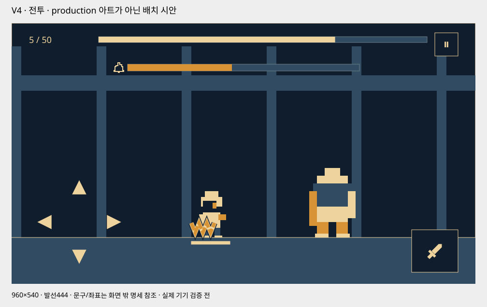
이전 v4 배치 참고 · 지면 약82%. 최신 타이밍 표시·버튼 배치와 크기는 아래 v5 개정안이 우선한다. 연출10 적용 기록은 별도 보존한다.
공격 예고와 완벽 회피, 강화 가격과 버튼에 관한 이전 설명은 이 개정안을 우선한다. 기존 연출10의 적용 기록과 v4 검토 기록은 과거 상태로 보존한다.
공격 예고: 위험 영역과 일정한 속도의 타이밍 막대를 분리한다. 회피 유효160ms 중 마지막60ms 완벽 판정은 유지한다.
완벽 회피: 성공 확정 시 ‘완벽’320ms·청록 마름모와 이중 종 파문180ms·전용 종소리를 묶는다. 기존 기절 누적20/40을 실제 증가량으로 강조한다.
경제 재개정: 강화할 때마다 약25%, 10→11·20→21·30→31·40→41 돌파는 약2.5배. 목표L의 가격은 ceil(10×1.25^(L−1)×2^floor((L−1)/10))G. 스테이지S 기본 골드는 그 가격의2배, 중간×3·보스×5. 10층까지1,374G로 공격·HP11과 행운·공명7을 구매하는 예산을 맞춘다.
버튼: 남색 철판·황동 모서리·크림색 기호. 960/640 화면에서 회피64/56, 공격104/80 크기로 재배치한다. 방향키 배경은 두지 않는다.
달리기: 새8자세를20fps·400ms로 적용했다. 배경 이동을640 기획px/2초로 줄였고 전체 전환3250ms는 유지한다. 접지 오차2px 목표와 별도 출발/감속 자세는 추가 검토 대상이다.
원작 조사: 공식 소개·패치·리뷰·커뮤니티 표본을 확인했다. 전체 내부 밸런스표·모든 강화 가격·정확한 Just ms는 확보하지 못했으며 제안값과 구분한다.
아침을 되찾으러 오른 종탑. 그 안에 갇힌 것은 밤이 아니라, 마을의 내일이었다.
종이 멎은 뒤 밤이 끝나지 않는 마을. 작은 종지기 온은 손안의 불씨를 들고 탑에 들어선다. 다섯 종을 깨우면 아침이 돌아온다고 믿지만, 보스를 쓰러뜨릴 때마다 탑이 감춰 온 기록이 드러난다. 마지막에 해야 할 일은 새로운 누군가를 종의 연료로 바치는 것이 아니라, 빼앗긴 시간을 주인에게 돌려주는 것이다.
첫 화면은 바로 전투입니다. 이야기는10·20·30·40·50층 보스가 쓰러진 뒤 세 박자의 짧은 대사로 드러납니다. 아래 인물상과 숨겨진 진실은 이번 개정 기획안이며, 실제 컷신 구현 완료를 뜻하지 않습니다.
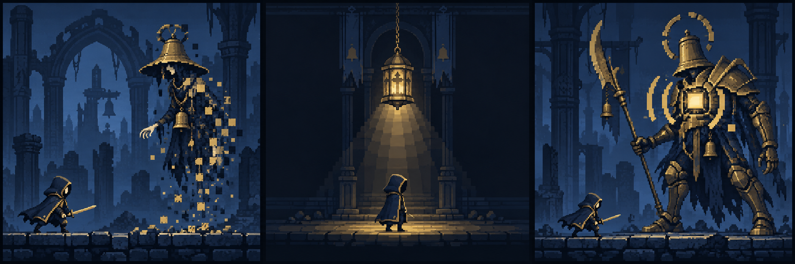
오래전 재앙을 두려워한 시왕은 마을의 시간을 다섯 종에 보관해 아무것도 잃지 않는 하루를 만들려 했다. 처음에는 하루를 빌렸지만, 끝내 돌려주지 못했다.
종은 마을 사람들의 남은 시간을 조금씩 끌어올렸다. 길어진 하루 끝에 창문이 꺼지고 주민들은 잠들었다. 밤은 탑 밖에서 밀려온 적이 아니라, 아침으로 나아갈 시간이 사라진 결과다.
마지막 종지기였던 잿빛 성기사는 더는 시간을 빼앗지 못하도록 종추를 부쉈다. 빼앗긴 시간을 돌려보내는 첫 조각을 성문 밖 등불에 남겼지만, 혼자서는 다섯 봉인을 풀지 못했다. 온은 꺼져 가던 그 등불에서 불씨를 이어 받아 탑으로 향한다.
다섯 보스는 탑에 남은 수호 명령과 기억의 잔향이다. 전투 중에는 오래된 명령에 묶여 길을 막고, 패배하면 잠깐 본래의 목소리를 되찾는다. 종을 깨운다는 것은 징수를 다시 시작하는 일이 아니라 각 봉인을 해제하는 일이다.
마지막 빈 종에는 미래를 빼앗긴 이들의 목소리만 남아 있다. 네 봉인을 풀며 모인 시간과 처음의 불씨를 다섯 번째 종에 돌려보내면, 종이 쌓아 두었던 시간이 마을로 돌아가 자연의 아침이 다시 흐른다.
아침을 되찾겠다는 믿음으로 오른다. 끝에서는 누군가를 희생시켜 종을 잇는 대신 모두를 돌려보내는 선택을 한다.
문을 지키는 일이 사람을 지키는 일이라고 믿었다. 안에서 잠긴 빗장을 보고, 끝까지 닫는 힘보다 열어 보내는 용기를 배운다.
사라진 종소리 속 목소리를 듣는다. 하나의 성스러운 울림이라고 생각했던 소리가 주민 각자의 기억임을 알아본다.
온·담·린은 같은 사건을 서로 다른 시선으로 따라가는 선택 주인공이다. 각 출전은 선택 인물 한 명의 여정이며 동시에 세 명이 50층을 순서대로 정복하는 정사는 아니다. 핵심 진실과 결말은 같고 마지막 한 줄의 응답만 달라진다. 다른 인물의 진행·체크포인트·NG+는 바뀌지 않는다.
첫 Stage 1에서 꺼진 창문, 안쪽에 걸린 성문 빗장, 성문 밖 등불에서 이어 받은 손안의 불씨를 보여 준다. 창문에는 사람이 있었음을 암시하는 작은 생활 흔적만 남긴다. 곧바로 회피→공격 튜토리얼에 들어간다.
첫 실행 즉시 전투다. 별도 로비·선행 컷신·읽기 확인을 추가하지 않는다. 시작에는 서사 자막 없이 환경으로 질문을 남기고, 첫 짧은 대사는10층 보스 뒤에 나온다.
보스의 몸이 무너진 다음 핵과 종에 남은 목소리로 말합니다. 진실·복선 설명은 이 기획서에만 남기고 게임 하단에는 말하는 이와 대사만 표시합니다.
10층 종의 기사 · 20층 매달린 집행관 · 30층 정지한 시왕 · 40층 잿빛 성기사 · 50층 새벽의 빈 종
STAGE 10 / 성문
명령을 지키는 것이 보호라고 믿었던 수문장. 패배 뒤에도 변명하지 못하고 자신이 잠근 빗장을 바라본다.
장병기를 바닥에 짚고 한쪽 무릎을 꿇는다. 후광이 갈라지고 갑옷이 네모 도트로 떨어진다. 몸이 사라진 자리에서 안쪽 빗장이 내려가고 황동 핵 하나가 잠깐 남는다.
“문은… 안에서 잠갔다.”
“사슬 끝을 봐라. 묶인 건 우리가 아니다.”
“그럼, 무엇을 가둔 거지?”
담: “내가 지키던 문도… 안에서 잠겼어.”
린: “사슬 너머에서 사람 목소리가 들려.”
외부의 침입으로 닫힌 성문이 아니라 탑의 명령으로 마을을 안에 가둔 문이다. 아직 시간 징수의 전모는 말하지 않는다.
플레이 시작부터 보이던 안쪽 빗장이 실제로 내려간다. 기사 핵의 빛은 위가 아니라 아래 마을을 향한다.
열린 성문 뒤로 이어지는 사슬을 따라11층 회랑으로 간다.
첫 화면의 안쪽 빗장 회수. 마지막에는 봉쇄가 아니라 빼앗긴 시간을 돌려보내는 길을 연다.
STAGE 20 / 사슬회랑
징수를 수행하다 자기 몸까지 사슬에 매단 집행자. 책임을 피하지 않으며 마지막에는 어느 고리를 풀어야 하는지 알려 준다.
몸을 매단 큰 사슬이 차례로 끊긴다. 집행관이 낮게 내려앉고 철창 틀이 도트로 무너진다. 떨어진 고리의 집 문양과 잠든 마을의 같은 문양이 맞물린다.
“이 사슬은 죄인을 묶지 않았다.”
“마을의 내일을 종에 매달았지.”
“꺼진 창문마다… 시간이 남아 있어.”
담: “이 고리를 전부 풀고 가겠다.”
린: “이건 종소리가 아니야. 사람들의 기억이야.”
사슬은 몬스터를 봉인하는 장치가 아니라 마을의 시간을 종으로 옮긴 통로다. 어둠 속 주민은 사라진 것이 아니라 시간이 멎은 채 잠들어 있다.
사슬 고리에서 풀린 작은 빛이 마을의 해당 창문에 닿는다. 일부 창문만 켜져 아직 반환이 끝나지 않았음을 보여 준다.
사슬들이 연결된 거대한 시계의 축을 따라21층으로 오른다.
10층의 사슬 끝이라는 단서 회수. 이름 없는 배경 창문들이 시간의 주인이었음을50층의 창문 점등으로 마무리한다.
STAGE 30 / 멈춘시계
상실을 견디지 못해 마을의 하루를 붙들었던 통치자. 자신이 만든 질서를 믿지만 무너진 시계 앞에서 보호와 소유를 혼동했음을 인정한다.
시왕의 왕관과 맞물린 시계 테가 어긋난다. 몸을 떠받치던 톱니가 한 번 멎고 도트로 흩어진다. 멈춰 있던 바늘이 한 칸 앞으로 움직인다.
“한 사람의 내일로 하루를 샀다.”
“잃을까 두려워… 아침까지 멈췄구나.”
“지킨 게 아니라 빼앗은 거야.”
담: “지킬 사람을 문 안에 가둬 버렸군.”
린: “같은 하루에 갇힌 목소리였구나.”
밤을 멈추게 한 원인은 고장 난 종이 아니라 시간을 보관하고 돌려주지 않은 시왕의 선택이다. 시간 징수는 보호를 명분으로 시작되었다.
시왕이 움켜쥔 바늘을 놓자 한 칸이 움직인다. 재가 묻은 부러진 종추 조각이 시계 아래 드러난다.
누군가 징수를 멈추려 종추를 부쉈다는 흔적을 따라31층 잿빛첨탑으로 간다.
멈춘 시계와 반복되는 밤의 원인 회수. 부러진 종추와 재의 주인은40층에서 드러난다.
STAGE 40 / 잿빛첨탑
마지막 종지기의 잔향. 징수를 끊으려 종추를 부쉈지만 봉인 안에 남았다. 수호 명령이 깨진 뒤에야 자기 불씨를 이어 받은 이에게 부탁을 전한다.
흉갑의 금이 손안 불씨와 같은 박자로 밝아진다. 성기사는 부러진 종추를 내려놓고 무릎을 꿇는다. 몸이 검은 재와 황동 도트로 풀리며 한 줄의 빛이 주인공 불씨에 이어진다.
“나는 종추를 부쉈다. 더는 빼앗지 못하게.”
“네 불씨는 연료가 아니다. 돌려줄 시간이지.”
“태우지 않을게. 모두에게 돌려줄게.”
담: “다음 종지기를 가둘 문은 남기지 않겠다.”
린: “목소리가 돌아갈 곳을 이제 알아.”
처음부터 가진 불씨는 새 희생을 위한 연료가 아니라 반환을 시작할 시간의 첫 조각이다. 종추를 부순 마지막 종지기가 성문 밖 등불에 남겼고, 앞선 네 봉인에서 풀린 시간과 함께 마지막 종을 열 수 있다.
오프닝의 불씨, 로비 등불, 성기사 흉갑의 금이 같은 색·박자로 이어진다. 전투 뒤 재가 가라앉으며 정상으로 가는 창이 열린다.
더는 누군가를 태울 필요가 없다는 답을 품고41층 새벽종루로 간다.
처음의 불씨·사망 후 등불·30층의 부러진 종추를 회수한다. 힘을 새로 만드는 대신 돌려주는 선택이50층 해결책이 된다.
STAGE 50 / 새벽종루
의지가 있는 신이 아니라 주민들의 시간과 수호 명령이 얽힌 마지막 껍질. 패배 후에는 오래 묶였던 여러 사람의 목소리가 작은 잔향으로 들린다.
빈 종의 껍질이 세로로 갈라진다. 안에 있어야 할 종추 대신 수많은 작은 불빛이 드러난다. 외벽이 네모 도트로 떨어지고 빛들은 종지기의 손을 향해 기다린다.
“우리를… 다시 태우지 마라.”
“마을에 돌려보내 다오.”
“오늘은 아무도 남기지 않아.”
담: “문은 열려 있다. 모두 돌아가자.”
린: “한 목소리도 여기 남기지 않을게.”
마지막 종의 힘은 새 제물에서 나오는 것이 아니다. 안에 남은 시간의 주인은 마을 주민들이며, 불씨와 모인 시간을 돌려주면 더는 탑을 지킬 희생자가 필요 없다.
네 구역에서 돌려보낸 빛의 색이 빈 종 안에서 다시 보인다. 선택 뒤 엔딩에서 같은 빛이 아래로 흘러 모든 창문을 켠다.
하단 대사→유물 선택→완주 저장→약6초 엔딩→로비. 선택한 캐릭터의 다음 출전만 NG+1층으로 준비한다.
빗장·집 문양의 사슬·멈춘 바늘·반환용 불씨·비어 있는 종을 하나의 반환 장면으로 회수한다. 탑을 새 희생으로 유지하는 순환을 끝낸다.
10·20·30·40·50층 보스를 쓰러뜨린 뒤 몸체 붕괴가 끝나면 하단 대사를 보여 준다. 읽기 또는 건너뛰기 뒤 유물3택1을 진행한다. 10~40층은 선택·체크포인트 저장 후 다음 층으로 자동 이어지며 로비나 출발 확인을 넣지 않는다. 5·15·25·35·45층 중간 보스에는 이 스토리 대사가 없다. 유물도10단위 보스에서만 획득하며 중간 보스는 기본 골드·종 파편1개만 받고 자동 진행한다.
온·담·린 각각 보스별 첫 처치에 자동 재생한다. NG+는 키에 넣지 않아 같은 캐릭터의 반복 처치에서는 대사를 자동 재생하지 않는다. 이 기준은 게임 최초 사용자의 이야기 접근성을 보장하면서 캐릭터별 응답을 남긴다.
한 번의 건너뛰기는 현재 장면만 종료하고 storySeen을 저장한다. 이후 유물3택1은 생략·자동선택하지 않는다. 마지막 대사 완료도 같은 저장을 사용한다.
로비/설정의 이야기에서 무료 다시 보기. 해금된 장면은 온·담·린의 응답을 선택해 읽을 수 있으며 전투·보상·체크포인트는 변하지 않는다.
처치 저장에 storyPending과 다음에 보여 줄 줄 번호를 함께 둔다. 앱 종료 뒤에는 보스를 다시 처치하지 않고 붕괴 완료 상태→미완료 대사 줄부터 복구한다. 대사 완료/건너뛰기를 저장했다면 대사를 되풀이하지 않고 같은 유물후보를 복구한다. 선택 확정 뒤에만 체크포인트·회복·다음층을 반영한다.
50층 선택 확정에 completionId와 endingPending을 함께 저장한다. 엔딩 완료·건너뛰기에 endingSeen을 저장하고 로비로 간다. 중단되면 미완료 엔딩 컷부터 복구하며 유물 선택이나 NG+ 증가를 다시 실행하지 않는다.
쓰러진 종지기가 도트로 흩어지고 암전된다. 성문 밖의 같은 등불이 다시 켜지며 로비가 드러난다. 마지막 종지기가 남긴 불씨의 출발점이 돌아올 자리이기도 하다. 선택 캐릭터를 유지한 채 정비 후 다시 오른다.
등불은 귀환을 이해시키는 시각적 연결이다. 강제 사망이나 새 부활 비용·횟수 제한을 추가하지 않는다.
마을에 돌아온 아침은 취소되지 않는다. NG+의 강한 적은 탑에 남은 수호 명령의 잔향에 도전하는 재연이다. 마을이 매번 다시 멸망하거나 주민의 시간이 다시 징수되는 이야기는 추가하지 않는다. 이번에50층을 완주한 캐릭터만 강화된1층을 준비하고 다른 캐릭터 진행은 그대로 둔다.
| 구간 | 화면 | 게임에 남길 문구 |
|---|---|---|
| 0–3초 | 선택한 종지기가 불씨를 빈 종 안으로 놓는다. 모인 빛이 위로 타오르지 않고 아래 마을로 흘러 모든 창문을 켠다. | 돌아가자. |
| 3–6초 | 시곗바늘이 움직이고 푸른 밤이 옅어진다. 열린 성문 너머로 새벽빛이 들어오며 등불 곁에는 빈자리가 남지 않는다. | 마침내, 아침이 돌아왔다. |
50층 하단 대사 뒤 유물 선택과 완주·보상 저장을 마치고, 해당 캐릭터 최초 완주에만 자동 재생한다. 건너뛰기·무료 다시 보기를 제공한다. 같은 캐릭터의 이후 완주는 정산 뒤 로비로 간다. 다른 캐릭터 첫 완주의 응답과 엔딩은 해당 캐릭터 기준으로 볼 수 있다.
1~10층 MVP 서사는 첫 전투의 세 단서, 사망 뒤 등불 귀환, 10층 종의 기사 붕괴·하단3박자 대사·첫 봉인 해제까지다. 대사 뒤 유물을 고르면11층으로 자동 연결하며10층에 최종 엔딩이나 출발 확인을 넣지 않는다. 나머지4개 보스 장면과50층 엔딩은 확장 제작 범위다.
기존 첫 전투 환경 서사·50층의 아침 복원·캐릭터별 진행/NG+를 유지했다. 아래 종탑의 비밀, 보스 인물상, 대사는 이번 개정 제안이다. 종전의 보스 뒤 대사 없음과 계정 최초 엔딩만 자동 재생 규칙은 이 문서로 대체한다. 기존 서사 근거 · 현재 스토리 원본
| 항목 | 현재 기준 |
|---|---|
| 입력 | ▲ ◀ ▼ ▶ 화살표만 표시, 배경·테두리 제거. 보이지 않는 넓은 입력 영역은 유지 |
| 공격 예고 | 플레이어 주변의 크고 선명한 위험 궤적. 외곽선·형태로 방향 구분, HP·손가림 회피 |
| 상태 막대 | 플레이어·일반 적 HP는 각 발밑. 중간 보스·보스 HP는 상단의 긴 막대. 기절은 종 아이콘과 막대·자세로 전달 |
| 타격감 | 피해 숫자650ms 우상향, 캐릭터 전체 백색 피격. 치명타80ms·막타120ms가 겹치면 막타1회만. 기획1280px와Unity월드진폭은 아래기준으로구분 |
| 진입 | 최초 실행 즉시1층 → 회피 → 공격 튜토리얼 → 연속 진행. 사망하면 로비 |
| 성장 | 캐릭터별 공격력·체력·행운·공명, 고정 별점, + 강화와10개 종. 10→11·20→21에 큰 성장 |
| 진행 | 죽을 때까지 연속 전투. 보스 붕괴·첫 하단 대사·유물 선택과 전환 연출 뒤 다음 층 자동 진행, 10층 단위 출발 확인 없음. 50층 엔딩 유지 |
| 로비 | Stage 21처럼 재출발 스테이지만 표기, 지갑은 우측 끝. 골드 부족 시 필요한 파편 교환 확인 |
| 유물 | 좌측1/3 장착·보유 목록, 우측 효과 상세. 10단위 보스만3개 중1선택, 중복은 레벨업 |
| 특별 재화 | 종 파편: 중간 보스1 / 보스3, 반복 처치도 지급. 골드 교환·장착 슬롯·현금 상품 |
Unity 실행 화면의 회피 문제에 완료 프레임을 적용했다. 입력 수집 뒤 LateUpdate의TickInputFrame이 첫T에Progress1을 표시하고 다음 프레임 입력을D=T에서 먼저 평가한다. Unity6000.3.15f1에서 PlayMode5/5·EditMode58/58(Core52+Persistence6), Windows 빌드(오류0·166,062,892bytes)와 새 실행 파일smoke가 통과했다. GPU 치명타 팝업 한 시점을 확인했지만 시간적 흔들림·사람의 터치 검수는 아니다. Smoke 보상2회는 기존MVP 중간 보스·보스 보상 회귀값이며 이번에 유물 규칙을 변경하지 않았다. 아트·전환·서사 전체 적용을 뜻하지 않는다. 검증 복사본과 현재Runtime 소스는 일치하며 Android APK는 이번에 갱신하지 않았다.
온의 화면 기준x500과 바닥·다음 적1920px/2000ms, 적2820→900 이동으로 속도·거리를2배 높인다. SimpleGame 검술사 Move 실제8장·16fps·500ms를 참고해 별도 입력 자세에서 PixelLab MiniMax 전체 몸체 시퀀스 hero-v10-blademage-run을 생성했다. 반환9장 중 입력 반환00과01~07을 선택해8프레임·24fps(약41.67ms씩),약333.33ms에 재생해 모션을1.5배 높인다. 같은 달리기 위상으로 돌아온 끝08은 제외하며00과08의 픽셀 동일을 뜻하지 않는다. 검술사 원본은 왼쪽, 온은 오른쪽이다. review 상태의 기획 시안으로 품질 승인·실시간 브라우저·Unity 검증 완료가 아니다.
회피는 전체 교체 전 v4 원본 hero-dodge-up/down/front/back으로 복원한다. 아래 회피는 낮은 자세를타격잔해140ms까지유지하고 복귀한다. 판정창·무적은 그대로다.
예고 종료와 타격의 같은 시각을T, 입력을D로 둔다. 올바른 방향·회피 준비 상태에서T−160≤D<T−60은 일반, T−60≤D≤T는 완벽이다. Unity의TickInputFrame은T에서 타격을 미확정으로 두고 완료 화면을 한 번 표시한 뒤 다음 입력을 먼저 받는다.160/60ms·260ms 재사용 제한은 그대로이며 고정ms 늦은 입력 유예를 추가하지 않는다. 일시정지 복귀 때 완료 화면을 다시 표시하고 저장 복원은 새 예고에서 재개한다. 이미 확정한 피해는 소급하지 않는다. 기획 보드의offset 검토와 실제Unity 통합 검증은 구분한다.
적에게 달려가 실제 베기 1회 후 제자리로 복귀한다. 명중 200ms, 원위치 460ms, 재공격 500ms.
올려베기·내려베기와 각도 변화를 결합한 6조합. 공격 시작에 직전과 다른 조합을 한 번 확정하며 피해 횟수는 같다.
MVP 5종별 실제 피격 반동을 180ms 동안 표시한다. 예고·패턴·기절 시계와 분리한다.
맞은 캐릭터 전체의 불투명 픽셀만0~45ms 하얗게 유지하고120ms에 원색으로 돌아온다. 원래 투명도·배경·HUD와 기존180ms 피격 자세는 유지한다.
기획1280×720에서 막타120ms·최대5px, 치명타80ms·최대3px이며 겹치면 막타1회만 사용한다. Unity는 기존월드X0.035/Y0.02 진폭에 막타5/3배를 적용한다. 카메라3.1·960×540에서 약X5px/Y3px로 기획1280의5px와 정확히 같은 스케일은 아니다. HUD·위험·입력 고정, 감소 모션 흔들림0. 일반StageStarted에도 효과를 보존하고 보스 막타는 보상 화면 전650ms 표시한다. PlayMode 상태·종료와 새 실행 파일smoke 통과, 시간적 흔들림·사람의 터치 검수는 별도다.
피해 숫자는 명중 위치에서650ms 동안 우측96px·위72px(1280×720 기획Canvas +96/−72), Unity960기준UI에서는+72/+54로 이동한다. 처음400ms 유지 후250ms 동안 사라지며 일반·치명 숫자 크기는 기존대로다. 공격500ms 간격은 유지하고 기획의200ms 명중 숫자를 끝까지 보는 미리보기만850ms로 확장한다. 이번Unity 수정은 기존 실행본의 공격 시점을 바꾸지 않는다. 감소 모션은 숫자 위치 이동0·650ms 수명 유지. Unity PlayMode·새 실행 파일smoke 통과, GPU 치명타 팝업 한 시점 확인. 시간적 움직임·사람의 터치 검수는 별도다.
일반 처치: 도트 분해·복귀0~550ms →2초1920px 질주550~2550ms →정착2550~2750ms →Stage 조립·표시2750~3250ms →첫 예고. 사망은 쓰러짐·도트 분해→암전→등불 로비다.
새 적과 조우·정착한 뒤 큰 Stage N을 네모 도트로 조립한다.280ms 조립·120ms 유지·100ms 소멸 후 첫 전체 예고를 시작하며 보스는 배너 뒤 줌·포효를 진행한다.
Stage500ms → 큰 줌 유지·얼굴 원형 포효와 무피해 공격1회 → 줌아웃·정착 → 전투. 중간 총2300ms/보스2700ms, 재조우1500/1700ms다.
10·20·30·40·50층: 처치·기본 보상·고정 유물후보 저장→보스 붕괴→캐릭터별 첫 처치 하단 대사→유물3택1→선택·체크포인트 저장.10~40층은 자동 다음층,50층은 해당 캐릭터 첫6초 엔딩 뒤 로비/NG+1층. 중간 보스는 기본 골드·종 파편1개만 지급하며 대사·유물 선택 없이 자동 다음층.
공격 대기 자세와 공간 예고를 연결한다. 좌상향 큰 가시, 화면 밖 하늘에서 등 뒤로 사선 착탄하는 큰 화살을 사용한다.
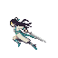
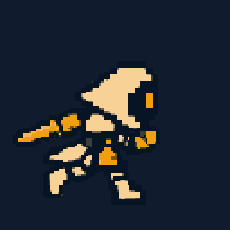
두 인물은 방향이 다르다. 검술사 이미지는 사용자 프로젝트의 동작 참고로 원형을 보존하고, 온은 별도 입력 자세에서 전체 몸체 시퀀스를 생성했다. 클립·컨트롤러·프레임 추적 근거
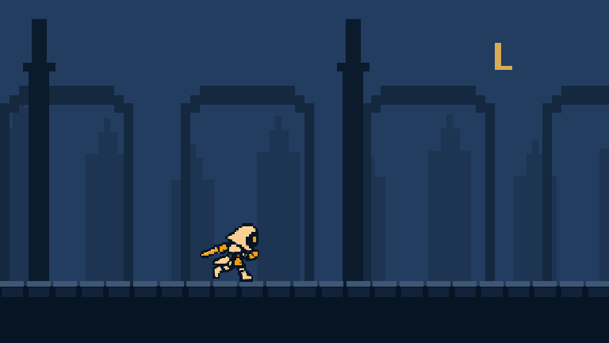
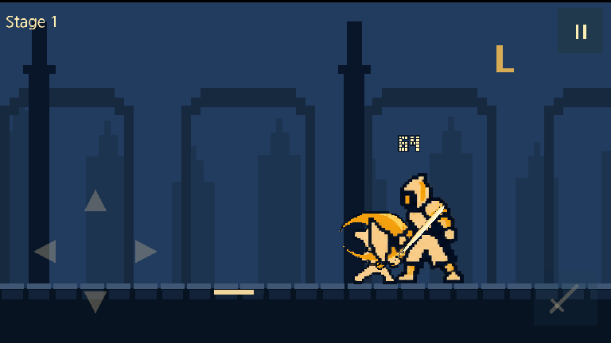
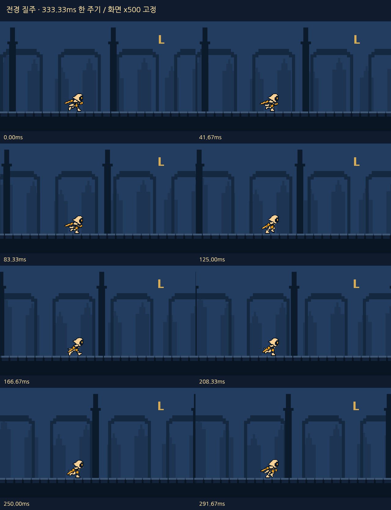
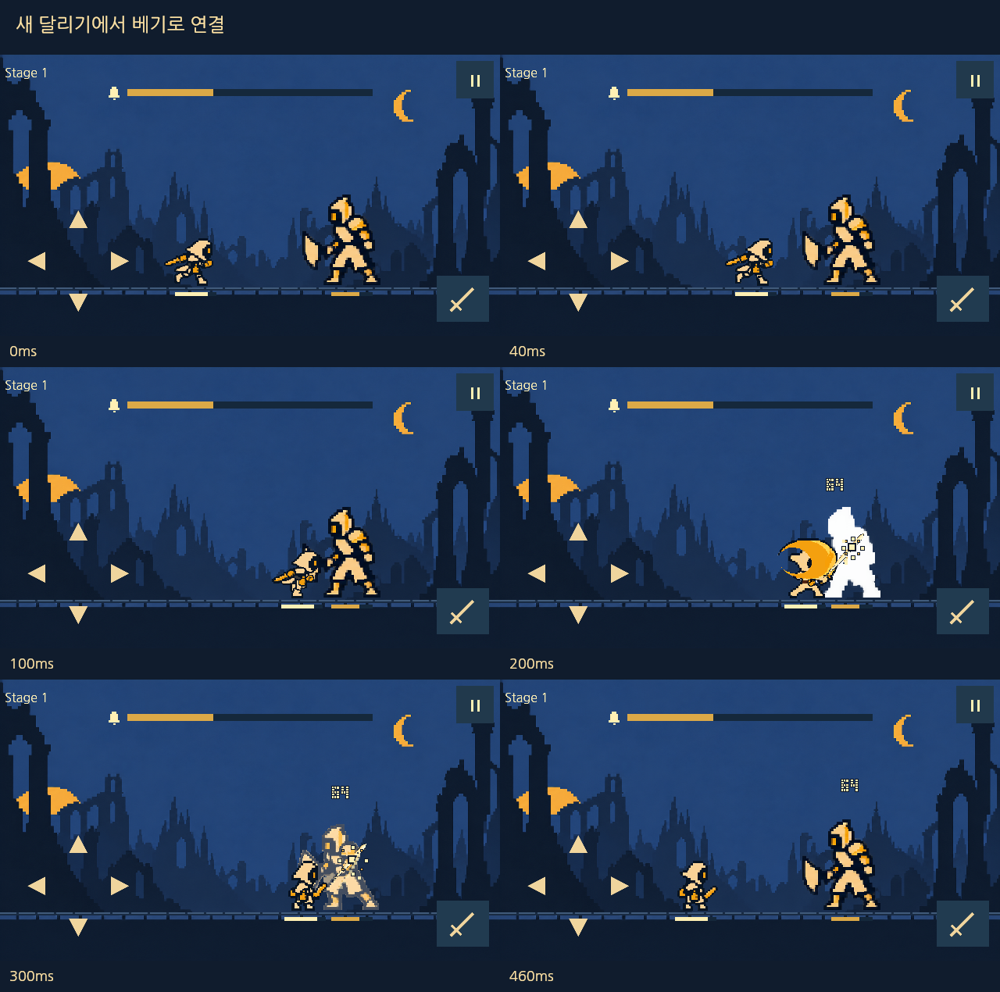
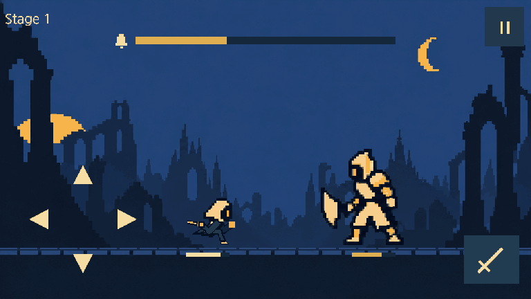
v10 검술사 참고·생성 기록 · v10 원형·동작 검토 · 이전 v9 시안 · 기존 피격·v4 회피 복원 근거
왼손은 배경·테두리 없는 ▲ ◀ ▼ ▶, 오른손은 검 아이콘을 누른다. 화살표 뒤에는 보이지 않는 최소48×48 입력 영역을 유지한다. 앞·뒤 회피 후 기준 위치로 복귀하며 적을 통과하거나 좌우가 뒤집히지 않는다.
플레이어와 일반 적의 체력은 각 인물 발밑에 둔다. 중간 보스·보스 체력은 상단 안전영역 안의 긴 막대로 표시하고 적 발밑에는 중복 표시하지 않는다.
기절 글자·누적 숫자는 제거한다. 종 아이콘과 긴 막대가 차오르고, 가득 차면 적이 주저앉으며 별·종 파문이 나타난다. 같은 막대는 기절 잔여 시간으로 줄어들고 면역 중에는 잠긴 형태를 보여준다.
초기 예고는 단발650ms, 연타 시작 전체 궤적900ms, 후속 타격 재강조250ms다. 현재 타격은 진하게, 다음은 옅게 최대2개까지 표시한다. 연타마다650ms 독립 예고를 순차 재생하는 방식은 쓰지 않는다.
공격 예고는 어두운 외곽선과 밝은 궤적으로 위험 방향을 크게 구분한다. 바닥 위험도 HP보다 위에 띄운다. 색·점멸·음향 없이도 형태와 위치로 구분하며, 다음 예고보다 현재 공격을 우선한다. 피해 팝업보다 예고가 위에 그려진다.
작은 유물 증가분을 버리지 않도록 실제 피해·현재HP는0.001HP 단위 정수로 저장한다. 최종 곱셈 뒤0.001HP로 한 번 반올림하고 피해 팝업만 정수로 표시한다. 최대HP는 정수다. 연출 숫자로 실제 판정을 다시 계산하지 않는다.
예고가 끝나는 타격 시각T에 올바른 회피 입력D가 들어오면 완벽 회피다. 일반은T−160≤D<T−60, 완벽은T−60≤D≤T이며 재사용 준비 조건을 유지한다. Unity 실행본은 입력 수집→LateUpdate의TickInputFrame→Render로 연결하고,T에서 완료 화면을 한 번 보인 뒤 다음 입력을 먼저 평가한다.160/60ms 판정창과 고정ms 유예는 바꾸지 않는다. PlayMode5/5·EditMode58/58 자동검사 통과, 실제 사람의 터치·시각 검수는 별도다.
v5 기획: 위험 위치 표시와 별개로 플레이어 기준점 위 선형 타이밍 막대를 둔다. 타격선은 고정, 마지막160ms/60ms를 형태로 구분한다. v5.1에 게임 적용했으며 상세 수치는 Presentation/feedback-plan-v5.json을 따른다.
| 위험 형태 | 위험 위치 | 대응 회피 |
|---|---|---|
| 좌상향 큰 가시 | 공격 대기 자세 → 지면 균열 → 좌측 상단을 향해 크게 솟는 가시 | ▲ 뛰기 |
| 높은 쓸기 | 머리·상체 높이의 궤적 | ▼ 숙이기 |
| 찌르기 | 적에서 몸통 앞쪽으로 좁혀오는 선 | ◀ 물러나기 |
| 후방 사선 화살 | 화면 밖 오른쪽 하늘 → 등 뒤 착탄 예고 → 여러 큰 화살의 사선 착탄 | ▶ 파고들기 |
| 연출 | 현재 기준 | 판정을 가리지 않는 조건 |
|---|---|---|
| 일반 피해 | 숫자 높이35px(960×540)·25px(640×360) 유지.650ms 동안 우측96px·위72px(1280×720),400ms부터250ms 소멸 | 맞은 대상 옆 별도 공간.0 피해 생략. 예고·HP·입력 우선. Unity960기준UI 이동은+72/+54. 숫자수명으로공격500ms간격을늘리지않음. 감소모션은위치이동0·수명유지 |
| 사각 파편 | 명중1회당4~6개, 치명타 최대8개 | 0.3초 이내, 대상 주변으로 분리. 아래HP를 덮지 않고 피격 방향에 맞춰 튐 |
| 치명타 | 숫자 높이50px(960×540)·35px(640×360)·외곽 유지. 같은650ms 우상향. 기획1280 흔들림최대3px·80ms, Unity월드X0.035/Y0.02 | 막타와 겹치면120ms 한 번만 사용. Unity막타는 기존월드진폭의5/3배. HUD·위험·입력 고정, 감소모션 흔들림0. 크기차이 유지 |
| 막타 | 막타120ms, 기획1280은최대5px. Unity는기존월드진폭5/3배(카메라3.1·960×540에서약X5px/Y3px) | 막타1회우선·치명타합산없음. HUD·위험·입력고정, 감소모션흔들림0. 일반StageStarted효과보존, 보상화면전650ms표시. 처치·보상재생성금지. 자동검사·새exe smoke통과 |
| 백색 피격 | 명중 뒤45ms 흰색 유지,120ms까지 원색 복귀 | 맞은 캐릭터 alpha만 유지해 색을 바꿈. 배경·HUD 제외. 실제 피해1회와 기존180ms 자세를 유지 |
| 완벽 회피 · v5 미적용 | 완벽320ms·2겹 종 파문180ms·고유 종소리·선택 진동 | 실제 PerfectDodge 사건에서1회. 일반20/완벽40 기존 누적, 기절 면역 중 가짜 누적 없음. 시간 정지·흔들림·추가 피해 없음. |
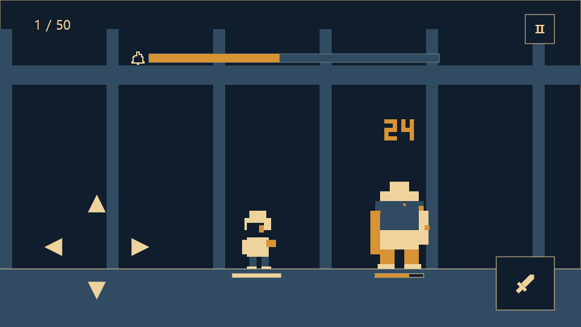
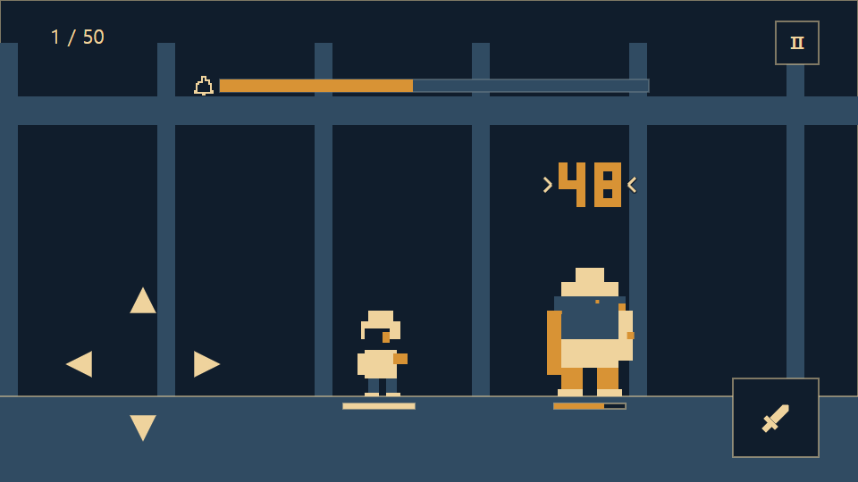
| 회피·기절 규칙 | 초기값 |
|---|---|
| 회피 | 유효160ms + 복귀100ms, 다음 입력까지260ms. 마지막60ms와 정확한 타격T까지 완벽. 올바른 방향·회피 준비 조건, T 이후 유예 없음 |
| 기절 누적 | 일반+20 / 완벽+40, 100에서 발동. 피격−20. 해당 적 전투에서만 유지 |
| 기절 상태 | 일반1.5초 / 중간1.2초 / 보스1초. 남은 공격 취소, 종료 후2초 누적 면역 |
| 공격 | 간격500ms·접근 후200ms 명중·460ms 원위치 복귀. 회피로 취소 가능하나 공격 간격 환급 없음. 캐릭터 강화·장착 구성은 출전 고정, 장착 유물의 레벨업만 다음 적부터 반영 |
예고 종료 수정·Unity 자동검사 결과 · 빌드·해시 통합 기록 · PlayMode5/5 · EditMode58/58 · 새 실행 파일smoke · GPU 치명타 팝업 한 시점 · 입력 offset 기획 검토
공격 예고는 위험이 오는 위치다. 눌러야 할 방향을 항상 표시하는 장치가 아니다. 소리·진동·화면 흔들림을 꺼도 궤적과 자세만으로 구분되어야 한다. 수치는 신작의 초기 가설이며 원작 실측값이 아니다.
튜토리얼은 올바른 회피와 유효한 공격을 차례로 확인한다. 틀린 입력은 다음 단계로 넘어가지 않으며 보호된 첫 연습에서만 피해를 막는다. 기다리는 동안 전투 시계와 예약 타격도 함께 멈춘다.
단계 완료를 저장해 앱 중단 뒤 같은 단계부터 안전하게 재개한다. 튜토리얼 종료 후 상시 정답 키나 공격 문구를 남기지 않는다. 나머지 방향은 처음 등장할 때 위험 궤적과 안전 공간을 충분히 보여준다.
사망하면 결과 보상을 확정하고 선택 캐릭터가 유지된 로비로 돌아온다. 일시정지의 ‘귀환’도 같은 체크포인트 규칙으로 출전을 끝낸다. 강화하려고 일부러 죽을 필요는 없다.
앱 중단은 사망이 아니다. 출전 HP·적 HP·층·회차·처리한 보상ID를 보존하고 재개 시 진행 중 타격을 취소해 온전한 예고부터 다시 시작한다. 재실행을 무료 회복으로 사용하지 않는다.
보스 뒤 다음 구간 출발을 묻지 않는다. 해당 캐릭터 첫10단위 보스는 붕괴 뒤 하단 대사를 읽거나 건너뛰고 유물을 고른다. 선택 저장 뒤 자동 다음층이다.50층만 선택 저장→캐릭터 첫 엔딩→로비로 연결한다.
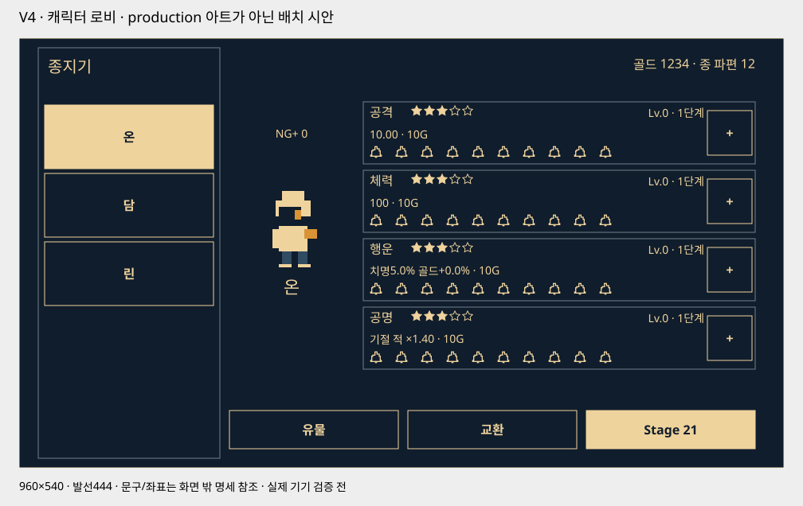
좌측 약1/4에 이름이 들어간 가로형 캐릭터 패널을 세로로 쌓는다. 이름을 터치하면 우측의 Idle 미리보기·능력치·별점·강화 레벨·회차·다음 출발층이 해당 캐릭터로 바뀐다.
계정 공용 골드·종 파편을 우측 안전영역 끝에 정렬한다. 출전 버튼은 Stage 21처럼 해당 캐릭터의 재출발 스테이지만 표시한다. 능력치 네 행은 별점·값·10개 종·가격·+ 버튼을 유지한다.
로비 첫 개방 시 세 캐릭터를 무료 선택할 계획이다. 첫 시제품은 온1명으로 연결하고 나머지는 개발 중으로 구분한다. Idle 미리보기는 유료 상품이나 능력치가 아닌 선택한 캐릭터를 보여 준다.
강화 골드가 부족하면 필요한 종 파편 수와 받을 골드를 먼저 확인한다. 교환은 골드 획득까지만 처리하고 자동으로 강화하지 않는다. 사용자가 다시 +를 누르면 강화한다.
v5는 남색 철판·황동 모서리 버튼과 가격/+ 통합 영역을 제안한다. 상세 크기·작은 화면 재배치는 최신 검토 보드를 따르며 아래 v4 그림은 이전 배치 비교 자료다.
| 캐릭터 | 공격 | 체력 | 행운 | 공명 | 특징 |
|---|---|---|---|---|---|
| 온 · 종지기 | ★★★☆☆ | ★★★☆☆ | ★★★☆☆ | ★★★☆☆ | 균형형 · 최초 출전 |
| 담 · 성문지기 | ★★☆☆☆ | ★★★★★ | ★★☆☆☆ | ★★★☆☆ | 체력 중심 · 실수 허용 |
| 린 · 잔향지기 | ★★★★☆ | ★★☆☆☆ | ★★★★☆ | ★★☆☆☆ | 공격·행운 중심 |
별점은 캐릭터의 고정 성장 적성이다. 확률 뽑기·별 강화·유료 승급은 이번 범위에 없다. 캐릭터를 바꿔도 다른 캐릭터의 성장이나 체크포인트를 덮어쓰지 않는다.
네 능력치는 별도 강화Lv.0~50이다. Lv.0에도 기본 전투 능력은 존재하고 종만 모두 비어 있다. 같은 비용을 써도 해당 능력치의 별점이 높을수록 더 많이 성장한다.
10→11·20→21·30→31·40→41에서 큰 돌파가 일어난다. 9→10은 통상 강화다. Lv.50은 이번 초기 상한이며51돌파를 미리 표시하지 않는다.
별은 강화로 차오르는 자원이 아니다. 종10개가 해당 레벨 구간의 진행을 표시한다. 강화 구매·레벨 상승·골드 차감은 한 번의 저장으로 확정한다.
| 스탯 | 전투 효과 | 제한 |
|---|---|---|
| 공격력 | 공격1회의 기본 피해 | 공격 속도·회피 타이밍은 그대로 |
| 체력 | 출전 시 최대HP | 출전 중 강화 불가, 일반층 사이 HP 유지 |
| 행운 | 치명타 확률과 처치 골드 증가 | 종 파편1/3·현금 상품·교환·MAX 유물 전환 골드는 증가하지 않음 |
| 공명 | 기절한 적에게 주는 피해 배율 증가 | 기절 시간·누적량·회피창·공격 속도는 늘리지 않음 |
| 강화 레벨 | 종 표시 | 공격 ★1 | 공격 ★3 | 공격 ★5 |
|---|---|---|---|---|
| 0 | 1구간 · 0/10 | 10.00 | 10.00 | 10.00 |
| 9 | 1구간 · 9/10 | 37.00 | 39.70 | 42.40 |
| 10 | 1구간 · 10/10 | 40.00 | 43.00 | 46.00 |
| 11 | 2구간 · 1/10 | 86.00 | 106.49 | 128.96 |
| 20 | 2구간 · 10/10 | 140.00 | 174.80 | 213.20 |
| 21 | 3구간 · 1/10 | 292.00 | 419.50 | 578.66 |
| 50 | 5구간 · 10/10 | 2,560.00 | 4,897.22 | 8,682.54 |
q=1+0.05×(별−1), b=max(0,floor((L−1)/10)). 공격=(10+3qL)×(2+0.15×(별−1))^b, HP=round((100+20qL)×(1.6+0.1×(별−1))^b). L은각스탯별레벨. 행운·공명 공식은 전투 담당의 v3 기본식과 v4 유물표를 따른다. E=q×(L+10b). 치명=min(30%,5%+0.15%p×E), 골드증가=min(20%,0.18%p×E), 공명배율=min(1.75,1.4+0.002E). 최종합산상한 적용. 실제 피해·현재HP는0.001HP 보존, 피해 팝업은 정수 표시, 처치골드는 행운 적용 후 내림.
| 강화 비용 | 도달 레벨 기준 |
|---|---|
| Lv.1~10 | 10→75G · 누적337G |
| Lv.11~20 | 187→1,388G · 누적6,536G |
| Lv.21~30 | 3,470→25,850G · 누적121,910G |
| Lv.31~40 | 64,624→481,483G · 누적2,270,834G |
| Lv.41~50 | 1,203,707→8,968,311G · 누적42,297,564G |
5·15·25·35·45층은 중간 보스,10·20·30·40·50층은 보스다. 체크포인트는10단위 보스만 만든다. 캐릭터마다 회차·체크포인트·최고 도달 기록이 따로 저장된다.
사망하거나 귀환할 때까지 한 출전으로 이어진다. 일반 적·중간 보스 처치는 유물 선택 없이 다음 층으로 자동 진행한다. 10·20·30·40·50층 보스만 유물3개 중1개를 선택한다. 10·20·30·40층에도 로비·출발 선택 화면은 없다. 체크포인트와 전회복만 확정한다.
사망·귀환은 현재 회차의 마지막 체크포인트 다음 층에서 재출전한다. 이미 확정한 전리품·성장은 유지한다. 완료한 과거 보스만 골라 즉시 재입장하는 기능은 초기 범위에서 제외한다.
10단위 보스 처치 시 기본 보상·고정 유물3개 제안·선택권·필요한 storyPending을 먼저 저장한다. 붕괴 뒤 캐릭터 첫10단위 보스 대사, 이후 유물 선택 순서다. 선택 확정에 성장/MAX 전환·체크포인트·회복/다음 회차 준비를 함께 저장한다. 재개는 미완료 대사→같은 선택권 순서로 복구하고 재처치·재추첨·중복 지급하지 않는다.
중간 보스 처치도 기본 골드·종 파편1개를 한 번 저장한 뒤 분해·이동한다. 유물후보·선택권·storyPending은 생성하지 않으며 체크포인트는 갱신하지 않는다.
| 상황 | 다음 출전 |
|---|---|
| 9층까지 완료,10보스에 사망 | 같은 캐릭터·회차의1층 |
| 10보스 완료 후19층에서 사망 | 11층 |
| 20보스 완료 후29층에서 사망 | 21층 |
| 40보스 완료 후50보스에 사망 | 41층 |
| 50보스 완료 후 다음 출전 | 해당 캐릭터만 다음 회차1층 |
| 시점 | 능력·행동 | 저장 |
|---|---|---|
| 첫 시작 | 잠든 종·불씨를 첫 전투 배경으로 표현 | 선행9초 컷신 없음 |
| 10·20·30·40 | 보스 붕괴→캐릭터 첫 하단 대사→유물1개 선택→체크포인트·회복→다음 적 자동 등장 | 출발 확인·구역 선택 없이 결과 확정 |
| 50완료 | 50층 붕괴→캐릭터 첫 하단 대사→유물 선택·완주 저장. 해당 캐릭터 첫 완주는6초 엔딩 뒤 로비, 반복 완주는 바로 로비. 건너뛰기·무료 다시 보기. | 선택 확정에 캐릭터 완주·다음 회차 준비·endingPending 저장. 엔딩 종료/스킵에 해당 캐릭터 endingSeen 저장. 중단 시 보상·NG+ 중복 없음. |
| 다음 출전 | 강화 몬스터·1층·최대HP | 성장·유물 유지, 해당 캐릭터 체크포인트0 |
z=floor((층−1)/10), j=(층−1)%10. 첫 회차 HP기초=[120,1050,4200,13500,40000], 피해기초=[8,40,110,280,650]. HP=round(기초×1.07^j×종류배율), 피해=ceil(기초×1.045^j×종류배율). HP종류배율 일반1/중간1.8/보스3.2, 피해1/1.15/1.3. NG+1은 HP기초[22000,26000,31000,37000,44000]·피해기초[500,600,700,800,900]의 별도 고정표, 이후 회차마다 HP×1.35·피해×1.20. 예고/회피창은 줄이지 않으며 초기 검증 범위는 NG+0~2다.
| 층 | 종류 | 적 HP | 피격 피해 |
|---|---|---|---|
| 1 | 일반 | 120 | 8 |
| 5 | 중간 | 283 | 11 |
| 10 | 보스 | 706 | 16 |
| 11 | 일반 | 1,050 | 40 |
| 15 | 중간 | 2,477 | 55 |
| 20 | 보스 | 6,177 | 78 |
| 21 | 일반 | 4,200 | 110 |
| 25 | 중간 | 9,910 | 151 |
| 30 | 보스 | 24,709 | 213 |
| 31 | 일반 | 13,500 | 280 |
| 35 | 중간 | 31,852 | 384 |
| 40 | 보스 | 79,421 | 541 |
| 41 | 일반 | 40,000 | 650 |
| 45 | 중간 | 94,377 | 892 |
| 50 | 보스 | 235,323 | 1,256 |
| 고정 출전 | 구간 | 최대HP | 순수 전투량 | 예상 피해 | 보스 회복 전 잔여 |
|---|---|---|---|---|---|
| 온 · 네 스탯Lv0 · 기준 | 1~10 | 100 | 126.3초 | 67.2HP | 32.8HP |
| 온 · 네 스탯Lv0 · 학습 | 1~10 | 100 | 136.8초* | 142.7HP | 평균식상10층 고갈 |
| 온 · 네 스탯Lv11 · 기준 | 11~20 | 616 | 102.8초 | 289.8HP | 326.2HP |
| 온 · 네 스탯Lv21 · 기준 | 21~30 | 1,821 | 101.6초 | 829.6HP | 991.4HP |
| 온 · 네 스탯Lv41 · 기준 | 41~50 | 10,519 | 95.6초 | 5,261.6HP | 5,257.4HP |
| 온 · Lv50 · NG+2 기준 | 41~50 | 12,597 | 114.9초 | 10,347.4HP | 2,249.6HP |
| 린 · Lv50 · NG+2 기준 | 41~50 | 9,605 | 87.9초 | 8,189.1HP | 1,415.9HP |
유물 없음·10전 동안 능력 고정. 기준: 공격활용90%/회피성공92%/전체타격 중 완벽35%, 학습:85%/85%/15%. F=100/[20(q−p)+40p−20(1−q)]×평균타격간격으로 기절 주기를 근사한다. 첫1~5층 예상 피해는 기준20.0/학습40.9HP. 표의 시간은 생존을 가정한 순수 전투량이며 사망·귀환·강화·전환을 제외한다. *학습136.8초는 실제 완주시간이 아니다. 서로 다른 출전 레벨의 행을 합쳐 캠페인 시간으로 쓰지 않는다. 평균식은 게이지 경계·연속 실수·개별 타격을 정확히 모사하지 않는다. 경제v5.1의 구매력 표는 공격·HP와 보조 능력치 레벨이 다르므로 이 동일 레벨 생존 표를 새 경제의 완주 근거로 사용하지 않는다.
위 표는 유물 없이 고정한 각 성장 상태의 계산 예시다. 서로 다른 레벨 구간을 한 번의 출전으로 합산하지 않는다. v4 유물 선택·레벨 성장은 별도 관찰 대상이며 위 생존량에 포함하지 않았다. 실제 완주 시간·사망 횟수·NG+도달 시간은 시제품에서 확인한다.
| 획득·사용 | 초기값 | 조건 |
|---|---|---|
| 중간 보스 | 매 유효 처치 종파편1개 | 5/15/25/35/45, 처음·반복·캐릭터·회차 동일 |
| 보스 | 매 유효 처치 종파편3개 | 10/20/30/40/50, 같은 결과 중복 지급 금지 |
| 기본 골드 | 각 스테이지 B(S)=2×C(S) | 매 층 상승 / 11·21·31·41층 추가 상승 / 중간×3·보스×5 |
| 장착 슬롯 | 1→2:4파편 / 2→3:8파편 | 계정10/20층 완료 후 구매 가능, 개방 권리는 공유 |
| 골드 교환 | 1파편당100 / 150 / 2,776 / 51,700 / 962,966G | 계정 최고 완료 보스0/10/20/30/40 기준 · 40에서 상한 |
| 현금 상품 | 4/12/20종파편 | 1,100/3,300/5,500원 후보, 최종 등록 전 검증 |
| 강화 부족분 교환 | 부족골드÷현재 교환율 올림 | 명시 확인 후 골드만 획득 · 다시 +로 강화 |
50층 한 번의 기본 처치 지급은 종파편20개와 골드172,833,824G다. 보스50층의89,683,110G를 포함한다. 종파편은 반복 보스에서도 같은 수량이며 최초 추가 보너스는 없다. 사망 전 처치 보상은 보존한다.
슬롯2를10층 완료 후 로비에서4개로 구매하면20층까지 남은4개로는 슬롯3의8개를 살 수 없다. 교환·추가 처치 없이30층을 완료하면 슬롯3 예산이 충족되며, 실제 구매는 다음 로비에서 한다. 20층 완료는 구매 가능 조건이며 무료 즉시 완성을 의미하지 않는다.
계정 공유 슬롯을 캐릭터마다 다시 사지 않는다. 종파편을 골드로 바꾸면 슬롯 구매가 늦어질 수 있으므로 교환 전 비용·잔액·다음 슬롯 가격을 함께 보여 준다.
모든 캐릭터의 골드 소비처가 소진되면 골드 교환을 숨긴다. 소비처가 모두 소진되면 종파편 판매도 숨기고 잔액은 보존한다. v2의 새벽석15/2·현금판매 보류·결과 광고를 승계하지 않는다.
NG+에서도 기본 골드·종 파편 수량은 같다. 행운은 전투 기본 골드에만 적용해 처치별로 내린다. Lv1~4 유물 재획득은 골드 없이 레벨만1 오른다. MAX 유물 선택만 표기된 골드로 바뀌며 행운은 적용하지 않는다. 파밍 속도는 시제품에서 측정한다.
경제 재개정: 10→11 비용187G·보유12G·계정10보스 미완료(교환율100G)이면2파편→200G를 제안한다. 확인 후212G, 레벨은 그대로. 다시+를 눌러187G를 쓰면25G. 계정 최고 완료 보스가 바뀌면 새 교환율로 견적을 다시 낸다.
교환 확인 중에는 같은 거래를 다시 누르지 못하게 한다. 대상 캐릭터·스탯·레벨·가격·지갑이 바뀌면 기존 견적을 폐기하고 새 수량을 다시 확인한다. 파편 부족이 상점 열기나 현금 결제로 이어지지 않는다.
일반 중복 유물 골드를 예상 수입에 더하지 않는다. 기본172,833,824G 예산은 유물·행운·교환과 독립적이다. MAX 유물은 보스층 기본값의1/2인75/1,388/25,850/481,483/8,968,311G로 조정한다.
새 가격은 C(L)=ceil(10*1.25^(L-1)*2^floor((L-1)/10)), L=1..50; C(0)=0. 통상 약25% 상승, 돌파는 통상 상승에 추가2배가 포함되어 약2.5배. 스탯1개 누적42,297,564G,4종169,190,256G. 10보스까지 기본1,374G로 공격·HP11/행운·공명7과 잔액18G를 맞춘다. 로비 구매력 예시이며 실제 생존·완주·재도전 횟수는 미검증. 게임 데이터는 변경하지 않았다.
골드 단위 상승에 맞춰 실제 적용 시 지갑·누적·보상·견적·저장은64비트 정수로 이전한다. 현재 레벨·잔액 보존, 과거 보상 재지급·소급 청구 없음. 기존 고정100G 교환과20/40/60/80/100G MAX 보상은 새 경제안에서 대체한다.
| 스테이지 | 기본값 시작→끝 | 중간보스 | 보스 | 구간 총액 |
|---|---|---|---|---|
| 1~10층 | 20→150G | 150G | 750G | 1,374G |
| 11~20층 | 374→2,776G | 2,730G | 13,880G | 25,322G |
| 21~30층 | 6,940→51,700G | 50,826G | 258,500G | 471,432G |
| 31~40층 | 129,248→962,966G | 946,638G | 4,814,830G | 8,780,804G |
| 41~50층 | 2,407,414→17,936,622G | 17,632,416G | 89,683,110G | 163,554,892G |
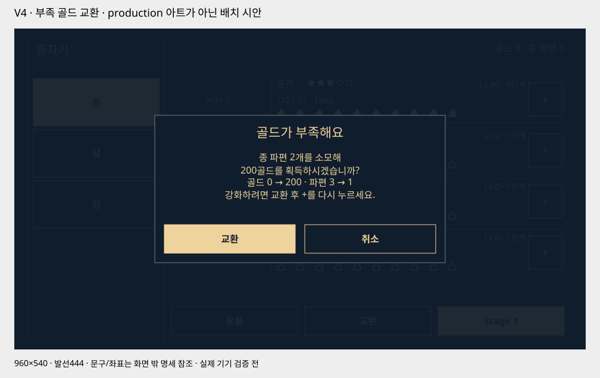
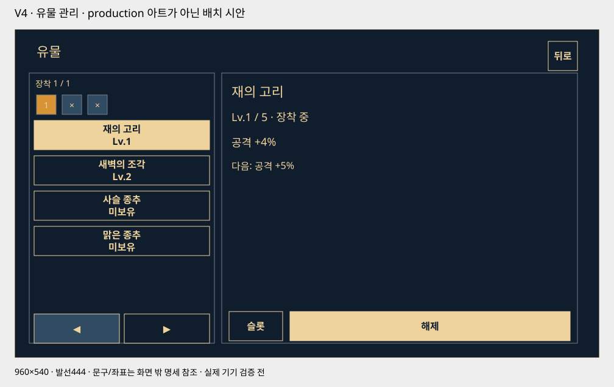
유물은10·20·30·40·50스테이지 보스를 유효 처치할 때만 얻는다. 전체10종 중 서로 다른3종을 같은 확률로 제시하고1개를 선택한다. 중간 보스는 유물을 지급하지 않으며 선택창 없이 다음 층으로 이어진다.
신규 유물은 Lv.1, 같은 유물은 Lv.1→2→3→4→5로 오른다. 중복1회당1레벨이며 별도 골드·종 파편·복제 아이템을 쓰지 않는다. Lv.5가 초기 상한이다.
좌측1/3 안에 작은 장착 슬롯과 보유 목록을 함께 둔다. 우측2/3은 선택한 유물의 이름·레벨·현재 효과·다음 효과·장착/해제다. 보상 카드에도 신규 또는 Lv 전후와 효과 전후를 보여준다.
유물과 레벨은 계정 공용, 장착 조합은 캐릭터별이다. 새 유물은 자동 장착하지 않는다. 현재 장착 유물의 중복 레벨업은 다음 적부터 반영한다. 캐릭터 강화·장착 조합은 출전 중 바꾸지 않는다.
최대 레벨 유물도 후보가 될 수 있으며 카드에 MAX · 골드 +N을 미리 표시한다. 선택하면 보스층 기본 골드B(S)의1/2인75/1,388/25,850/481,483/8,968,311G를 받고 레벨은 유지한다. 일반 중복에는 이 골드가 붙지 않는다.
효과표의 각 칸은 해당 레벨의 총효과다. 같은 효과끼리는 가산한 뒤 상한을 적용한다. 최고 조합의 공격+14%·HP+22%·치명24.2%·공명1.746으로 기존 상한 안에 남아 후반 성장이 잘리지 않는다.
장착 체력 유물의 레벨이 오르면 최대HP 증가분만 현재HP에 한 번 더한다. 최대100/현재50→최대110/현재60처럼 잃은HP 양을 유지한다. 10단위 보스는 그 뒤 새 최대HP로 회복한다. 미장착/미리보기/MAX/재접속은 추가 회복하지 않는다.
일반 누적 유물은20→21/22/23/24/25, 완벽은40→42/44/46/48/50이다. 누적량은 매 레벨 증가하지만 일반만 반복할 때 필요한 회피는5/5/5/5/4회, 완벽만 반복하면3/3/3/3/2회다.
특정 유물이 후보로 보일 확률은30%다. 미완성1종만 남으면 나머지MAX만 보일 확률70%이므로 매 선택이 레벨 상승을 보장하지 않는다. 무료/유료 재추첨과 특정 유물 보장은 초기 범위에 없다.
50층 한 회차에서 유물 선택은 총5회다. 반복 처치·NG+에도10단위 보스에만 같은 규칙을 적용한다. 신규/중복 성장·MAX 골드 전환은 유지하며, 획득 빈도 감소에 따른 수집·성장 속도는 구현 검증에서 다시 측정한다.
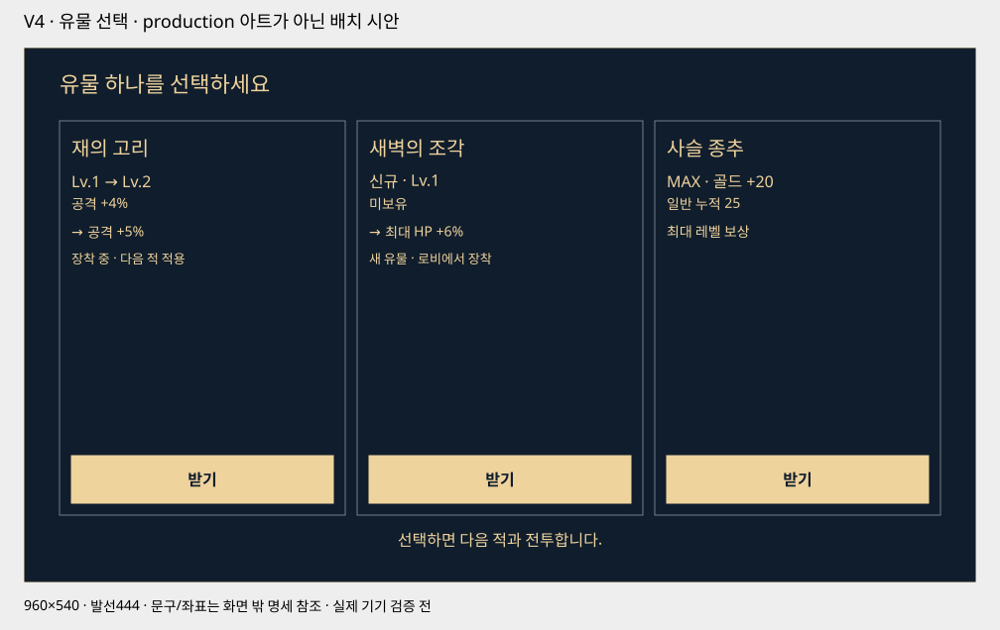
| 유물 | 효과 | Lv.1 | Lv.2 | Lv.3 | Lv.4 | Lv.5 |
|---|---|---|---|---|---|---|
| 재의 고리 | 공격력 증가 | 4% | 5% | 6% | 7% | 8% |
| 새벽의 조각 | 최대HP 증가 | 6% | 7.5% | 9% | 10.5% | 12% |
| 사슬 종추 | 일반 회피 누적 증가 | 5% | 10% | 15% | 20% | 25% |
| 맑은 종추 | 완벽 회피 누적 증가 | 5% | 10% | 15% | 20% | 25% |
| 종망치 파편 | 기절 적 피해 배율 가산 | +0.02 | +0.04 | +0.06 | +0.08 | +0.1 |
| 새벽의 장막 | 받는 피해 감소 | 4% | 5% | 6% | 7% | 8% |
| 꺼진 심지 | 공격력 증가 | 2% | 3% | 4% | 5% | 6% |
| 청동 매듭 | 최대HP 증가 | 6% | 7% | 8% | 9% | 10% |
| 울림 고리 | 치명 확률 가산 | 1%p | 1.5%p | 2%p | 2.5%p | 3%p |
| 여명의 종인 | 기절 적 피해 배율 가산 | +0.01 | +0.015 | +0.02 | +0.025 | +0.03 |
| 소유 범위 | 저장 항목 |
|---|---|
| 계정 공용 | 골드·획득/유료 종 파편·유물별 레벨·슬롯 권리·튜토리얼·해금된 이야기 보관함 |
| 캐릭터별 | 4개 강화 레벨·고정 별점ID·장착 조합·회차·현재 체크포인트·최고 기록·보스별 storySeen·endingSeen |
| 현재 출전 | 캐릭터·강화/장착 조합 스냅샷·적용 유물 레벨·현재 층·양측HP·적 패턴·난수 상태·현재HP 소수부·유물 성장 적용 완료ID |
| 보상/거래 기록 | 처치 attemptId·고정3후보/제안 당시레벨·선택ID·단계별 확정·교환 거래ID/견적·차감/지급·회차 완료 중복 방지 |
| 진행 중 서사 | 처치ID·캐릭터ID·storyPending·다음 대사 줄·고정 유물선택권·endingPending. 거래 단계와 함께 복구 |
현금 상품은 기획 후보이며 실제 결제 기능은 없다. 유물과 종파편은 남은 장착 공간과 무관하게 지급한다. 같은 보상/구매 거래를 중복 콜백으로 다시 지급하지 않는다.
계획53종 중 연속 Idle 후보1종, 정지 그림만5종, 미제작47종입니다.
| 대상 | 수량 | 실제 자산 | 상태 |
|---|---|---|---|
| 온 | 1명 | 새 연속 Idle 8장 후보 | 입력0 제외·1~8 재생. 최종 품질 확정·Unity 적용 전. |
| 담·린 | 2명 | 미제작 | 전용 Idle 이미지와 연속 클립 없음. |
| MVP 몬스터 | 5종 | 정지 대기 그림만 각1장 | 성문 파수병·사슬 망령·재의 불씨·성문 수문장·종의 기사. 연속 Idle 없음. |
| 확장 몬스터 | 45종 | 미제작 | 명단·동작 제작 계획만 있음. 계획 프레임 수를 제작 실적으로 세지 않음. |
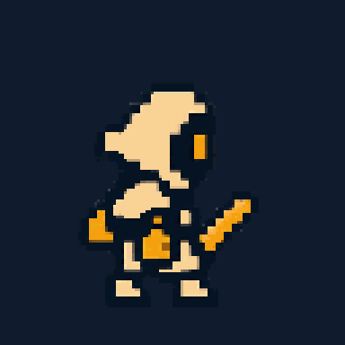
현재 전투 미리보기의 온은 대기 프레임1을 고정 표시한다. 상태 검토에서 ‘대기’를 선택해 재생하면 8장이 전환되지만 700ms 후 재생이 멈춘다.
Unity에는 온의 기존2포즈 반복과 MVP 적5종의 정지 그림·위치 흔들림만 있다. 새8장 Idle은 적용하지 않았으며 로비 초상도 정지다.
따라서 ‘모든 캐릭터·몬스터 Idle 제작 완료’가 아니다. 원본 파일 존재·연속 모션 검수·기획 연결·Unity 연결을 각각 구분한다.
다음 제작 순서는 MVP 적5종의 연속 Idle과 온의 루프 검수·연결, 이후 담·린과 확장45종이다. 이번 수정은 현황 공개이며 새 Idle 생성 작업을 완료한 것으로 표시하지 않는다.
| 단계 | 만드는 범위 | 확인할 것 |
|---|---|---|
| 1 · 연결 시제품 | 온1명,10층+11자동 진입,4방향·튜토리얼·로비·종 강화·유물3종/선택·레벨 | 9사망→1,10선택→11,보유/신규/중복,부족분 교환 후 +강화 |
| 2 · 경계 검사 | 개발용50완료·엔딩·NG+상태,중단/저장/지갑 테스트 | 선택 중 중단/동일 제안 복원·중복 클릭·MAX·부족파편·낡은 견적·캐릭터별 진행 |
| 3 · 콘텐츠 확장 | 캐릭터3명·50층·유물10종·강화회차·원스토어상품 | 10층 생존예산·파밍시간·별점차·유료/무료진행 |
| 리소스 | 수량·범위 |
|---|---|
| 플레이어 | 이전 초기 예산(현 제작 수량 아님): 3명×16=48프레임:대기2+공격3+4방향회피각2+피격1+패배2 |
| 적 | 이전 초기 예산(현 제작 수량 아님): 일반4원형×23=92, 보스3원형×24=72. 5중간보스·보스2지점은 변형 재사용 |
| 총 동작 | 이전 초기 예산(현 제작 수량 아님): 212프레임 후보. 첫10층 시제품은 온+일반2원형+중간1변형+보스1원형만 제작 |
| 유지하는 v6 베기·피격 | 상향/하향 베기 각24장·MVP 적5종 피격 각16장. 생성 원본과 선별 재생 셀을 구분하며 Presentation/PixelLab/assets.json에 기록한다. 반려된 v6 달리기는 현재 채택에서 제외한다. |
| v10 검술사 참고 달리기 | 별도 입력 자세 + PixelLab MiniMax 전체 몸체 생성 hero-v10-blademage-run. 반환9장 중00~07 선택8장(00입력반환 포함),08끝프레임 제외.24fps·약333.33ms·피벗[60,114], 이동1920px/2000ms(960px/s). v9관절 방식은 반려 자료로 보존. 생성 수량과 선택 재생 수량을 구분하며 review 상태·Unity 미적용. |
| v4 회피 복원 | 기존 hero-dodge-up/down/front/back 원본 각각 생성16장. 새 제작 수량으로 더하지 않고 기존 시트와 선별 재생을 사용한다. |
| 효과 | VFX21프레임 후보+파편2텍스처+숫자0~9글리프. 흔들림은 코드 연출 |
| UI·환경 | 4방향·검·종·별·체력·기절·통화 아이콘, 캐릭터 로비4스탯,5구역 배경 |
| 콘텐츠 | 50층 데이터·10유물아이콘,튜토리얼2행동,50엔딩·다음회차 |
| v4 UI 추가 | 유물 목록/상세·3선택 카드·Lv/MAX 표시·강화 부족분 교환·저장 대기/실패 상태. 기존10유물 아이콘과 숫자 글리프 재사용 |
| 보스 서사 | 10/20/30/40/50 장면5개·장면당3박자 하단대사·온/담/린응답·6초엔딩. 실제MVP제작은10층 장면1개. 나머지는확장 기획. |
최소640×360,기본960×540,와이드1200×540과안전영역·120%글자에서레이아웃을확인한다.삼각형은작게보여도터치영역은충분히확보하고동시에겹치지않게한다.
관찰 테스트는 첫2단계 안내 뒤 정답 표시 없이4방향을 구별하는지,기절 순간 공격하고 싶어지는지,체력 위치를 놓치지 않는지부터 확인한다.첫 출전과 성장 후 출전을 따로 측정한다.
v2의 프레임수·완주시간·공수는 확대된 v3에 그대로 적용하지 않는다. 제작비와 일정은 첫 시제품 및 실제 제작 자산을 기준으로 다시 추정한다.
v2 대비 순증은 아트/배치8~15, 코드/데이터11~19, 경계/입력 검증4~7인일로 합계23~41인일 후보(1인일6시간)다. 실제 견적·전체 납기가 아니며 결제 서버·SDK·심사 검증은 별도다.
v4는 유물 선택/레벨·제안 저장·부족분 교환 상태를 추가한다. 이전23~41인일 후보는 v3 변경분이며 v4 전체 납기로 사용하지 않는다. 추가 공수는 연결 시제품 이후 산정한다.
212프레임과 플레이어3명×16장 등은 이전 초기 제작 예산이다. 현재 후보 수량은 자산 목록의 채택/반려 상태와 실제 원본을 기준으로 확인하며, 새 모션·원본 정리를 포함한 공수는 재산정한다.
CombatModel이 판정·피해·기절·전투 시계를 소유한다. HP/기절 막대·픽셀 숫자·파편은 결과를 받아 표시한다. 연출 시간이나 화면 흔들림이 판정창을 바꾸지 않는다.
Excel의 Character·StatGrowth·Stage·PatternSteps·Relic·RelicLevel·CurrencyProduct·Copy에서 데이터 카탈로그를 생성한다. UI는 저장 프리팹의 anchor·레이아웃을 사용하고 표시가 직접 보상이나 전투 상태를 변경하지 않는다.
일반 적·중간 보스는 기본 보상만 저장하고 유물 후보를 생성하지 않는다. 10단위 보스는 기본 보상과 고정 유물3후보·선택권을 먼저 저장한다.10단위 첫 보스는 storyPending→붕괴→하단 대사 완료/스킵 저장→유물 선택 순서다. 선택 확정에 성장/MAX 골드·체크포인트/회복·50완주/NG+ 준비를 원자적으로 저장한다.50층은 선택 뒤 캐릭터 첫 endingPending을 처리한다. 종료/중복 입력에서 거래ID별1회만 처리하고,다른 캐릭터의 중단 출전은 보존한다.
종파편은 성장과 슬롯에 쓰이는 현금 구매 가능 재화다. 성능에 영향 없는 외형 상품으로 설명하지 않는다. 무료 보스 파밍과 경쟁하므로 상품 추가만으로 구매율을 올려 계산하지 않는다.
기존130,080원 수치를 v3 예상 매출로 재사용하지 않는다. 별도 결제자 비율과 구매액의 민감도만 제시하며 광고 매출은 승계하지 않는다.
v4 유물 선택·레벨업은 무료 플레이 보상이다. 기존 매출 민감도에 추가 매출을 가산하지 않는다. 유료 상품·확률 뽑기를 새로 추가하지 않는다.
| 상품 후보 | 가격 | 제공 |
|---|---|---|
| 종파편4 | 1,100원 | 종파편4 |
| 종파편12 | 3,300원 | 종파편12 |
| 종파편20 | 5,500원 | 종파편20 |
| 30일 민감도 | MAU | 결제자 비율 | ARPPU | 모형상 수입 |
|---|---|---|---|---|
| 구매0 | 2,000 | 0% | 0원 | 0원 |
| 낮음 | 2,000 | 0.5% | 1,100원 | 7,840원 |
| 중간 | 2,000 | 1.5% | 2,200원 | 47,040원 |
| 높음 | 2,000 | 3% | 3,300원 | 141,120원 |
종파편 직판 수입 모형: MAU×결제자 비율×월ARPPU×0.98÷1.1×0.8. 환불2%·수수료20%·할인없음 가정, 광고·외형·노무비·이용자확보비용 제외. 계정별 감면·실제정산액은 확인 전.
가격·전환율·파밍 시간은 출시 전에 검증해야 할 가정값이다. 노동비·유료 이용자 확보 비용을 제외한 금액을 사업 이익으로 표시하지 않는다. 원스토어 연동 조건은 담당 문서의 공식 출처와 확인일을 따른다.
| 담당 | 검토 | 상태 |
|---|---|---|
| 기획 | 연속 스테이지·유물 선택·50층·Stage 표기 | v4 당시 검토 완료 · v5 승인/구현 검증 아님 |
| 전투 | 유물10종 Lv1~5·상한·다음 적 적용·큰 피해 숫자 | v4 당시 검토 완료 · v5 승인/구현 검증 아님 |
| UI | 화살표·예고·팝업·유물1/3 배치·교환·자동 진행 | v4 당시 검토 완료 · v5 승인/구현 검증 아님 |
| 경제 | 부족분 교환·3택1·MAX 한정 전환·기존 예산 | v4 당시 검토 완료 · v5 승인/구현 검증 아님 |
v5.1 게임 적용 · 선형 타이밍·완벽 피드백·매회 상승 강화/스테이지 보상·반응형 버튼·8자세 달리기
기획 검토 완료는 실제 재미·결제·출시 검증 완료를 뜻하지 않는다.
현재 결정 기록 · 수치·상태 전이 검사 · 렌더·상호작용 검사 · 이전 v3